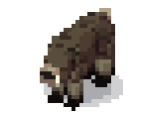
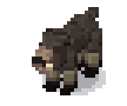
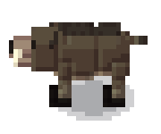
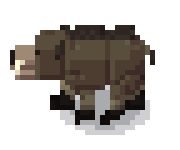

Copse Tusker
Copse Tusker is a creature of The Kindling Hills (level 13–14).
Copse Tusker is a creature of The Kindling Hills (level 13–14).
In the game
In the game the Copse Tusker is level 13–14, normal. It is found in The Shearing Downs. It can drop Drover's Boots (2%), Shearer's Bracers (2%) and rarely one of 8 rare items.
Gallery







